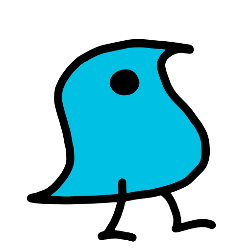
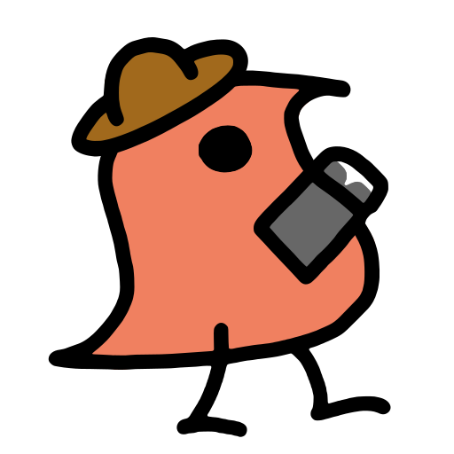

wugs.
A desktop app for linguistic fieldwork. Record and segment, transcribe in IPA, gloss, build the lexicon and seal a version for the archive. Free, open source, and it works without an internet connection.
What it does today
- Record and segment
- Record in the app or drop in WAV, M4A, MP3 or FLAC. Auto-segment by utterance or by word, then split, merge and nudge with undo.
- Transcribe
- A keyboard loop over the segments with an IPA palette. A phone recognizer can suggest a first pass, marked until a person checks it.
- Gloss
- Leipzig-style interlinear glossing that learns from your earlier analyses, tied to the lexicon.
- Lexicon and elicitation
- Entries, senses, semantic domains and paradigm grids. Swadesh and Leipzig-Jakarta lists to work through.
- Work together
- Sync between laptops on the same network, no server or account. Edits from two people merge, and real disagreements wait in a queue for you.
- Keep it
- Open in Praat and bring changes back. Import and export ELAN, FLEx, Praat and Toolbox. Seal a version as an archive-ready BagIt package.
wugs is early. Keep a copy of your project folder, and tell us what breaks.
All downloads
Opening it the first time
The installers are not yet signed by Microsoft or Apple, so your computer asks once whether you trust them.
Windows
- Open the downloaded
-setup.exe. - If Windows says Windows protected your PC, choose More info, then Run anyway.
- Finish the installer. wugs is in the Start menu.
macOS
- Open the
.dmgand drag wugs into Applications. - Open wugs. When macOS says it cannot check it, choose Done.
- Open System Settings, then Privacy & Security. Near the bottom, choose Open Anyway beside the message about wugs.
Linux
- AppImage: make it executable (
chmod +x wugs_*.AppImage) and run it. - Debian or Ubuntu:
sudo apt install ./wugs_*.deb.
After that, wugs updates itself. Each update is signed, and it asks before installing.